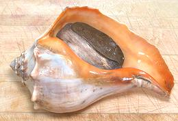
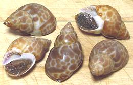

SAFARI
Users
General & History
Gastropods first appeared in the seas of the Lower Cambrian period more than 500 million years ago and long before there was any life at all on land. They were immediately successful and have since expanded their range to include fresh water and your garden.
"Gastropod" means "stomach foot" which is inaccurate because the stomach is up inside the shell, but they do sort of "crawl around on their belly". Gastropod shells (not all have shells) expand in a spiral form off to one side of the body as the occupant grows.
Some gastropods are vegetarian, but others are notorious for drilling into and eating oysters, clams and other bivalves as well as other gastropods. Others will eat just about any organic material they can find.
Cleaning & Cooking
Land snails need a lot more pre-preparation than sea or fresh water snails because of the slime they depend on for getting around. Basic preparation for small snails is to keep them away from food for 2 to 5 days depending on species to clean out their digestive tract. Land snails then need to be de-slimed by application of salt or by other means.
Larger snails like conch can be properly disassembled and cleaned so do not need any pre-prep (except a good pounding to tenderize them). Details for cleaning and preparation are included in the sub-article for each variety (click on the photo or on "Details and Cooking").
Varieties of Snails
Abalone
[Awabi (Japan), Abulon (Sp), genus Haliotis various species]
There are eight species of abalone off the coast of California. Red abalone can get up to a foot long but not many get much beyond the 7 inch minimum even though harvesting them is highly restricted (free diving only, no SCUBA or air tubes, strict limits and closed areas).
All wild abalone populations on the California coast are endangered or severely threatened due to poor fishery management, largely the result of inadequate data. The only exception is red abalone where severe restrictions have been somewhat effective. Some stocks are considered beyond natural recovery and must be restored by captive breeding and concentration by transplanting, particularly white abalone which is near extinction. Stocks in Australia, New Zealand and South Africa are similarly threatened.
The high price abalone fetches and the short supply has made
aquaculture viable. Three species are farmed in California: Red
(H. rufescens) in northern regions, Pink (H. corrugata)
and Green (photo H. fulgens) in southern regions and Baja
California. Abalone are fed California giant kelp, the harvest of
which is also strictly regulated.
Details and Cooking.
Apple Snail
[Pila polita of family Ampullariidae]
The largest of freshwater snails Apple Snails (various species) are found in tropical and subtropical wetlands worldwide. While some species can grow to 6 inches, the largest of the photo specimens was 2.6 inches long and weighed 1.9 ounces. Others in the batch, frozen whole in Vietnam, were smaller. For greater economy, buy frozen packages of apple snail meat - 50 or more for the same price as a dozen in the shell.
The Pila snails in the photo are native to Southeast Asia and
are a preferred eating snail. Unfortunately uneducated nitwits with get
rich schemes have illegally imported Pomacea canaliculata from
South America to Taiwan, Southeast Asia, the Philippines and Hawaii.
These snails have never been a commercial success because snail eaters
don't like them much and they are devastating rice and taro crops
wherever introduced, causing severe economic damage and driving out the
local snails.
Details and Cooking.
Blunt Creeper Snail
[Mud Creeper, Matah Merah, Belitong, Chut-chut, Hoy jup jeng (Thai), Longburm (Aust.) Cerithidea obtusa, of family Potamididae]
Found in the brackish waters of mangrove swamps in Southeast Asia
and Australia, these snails are gathered from the trunks and branches
of the mangroves and sold live in local markets. The photo specimens
were from Vietnam and labeled "Top Shell" which they are not. The
largest would have been about 1-3/4 inches long if the tip hadn't been
broken off. The tips are generally slightly broken in nature but these
have been broken farther down to facilitate eating them.
Details and Cooking.
Brown Garden Snail
[Petit Gris (French), Helix aspersa var muller (alt Cantareus aspersus)]
These snails have been introduced to various parts of the world by French immigrants, often with ill conceived dreams of snail farming and always with disastrous consequences. They have become quite a pest in California and cost many millions of dollars every year. Only ducks, rats and Frenchmen seem to want to eat them.
One of the primary "escargot" snails of France, Petit Gris gets up to
1-3/8 inches across the shell. The other two snails eaten by the French
are Gros Gris (H. aspersa var maxima) which grows to 1-3/4
inches and the Bourgogne Snail (H. Pomatia) which gets a little
bigger than 2 inches. Neither of these is a problem in California, we're
stuck with the little ones.
Details and Cooking.
Photo ©
i0021.
Conch - Queen Conch
[Pink Conch, Tricornis gigas]
Pronounced "konk", this snail is found throughout the greater Caribbean region from South Carolina to Venezuela and around the Atlantic island of Bermuda. They can grow to about 13 inches long but the photo specimen is 8-1/2 inches. They reach sexual maturity in about three years when they will be about 8 inches long and weigh about 2 pounds
Long an important food item in the Caribbean it is now in serious decline throughout its range. Because much of the region's population is poor and lacks education local fishery controls are often ineffective so international trade sanctions are in effect. It is illegal to take any queen conch in U.S. waters or to import them, their meat, shells or products made from them from a number of countries. Import from some countries is still allowed but it's becoming rather expensive due to scarcity.
Restocking efforts have failed because captive grown conch lack
survival instincts and are immediately eaten when placed in the ocean.
It has recently been discovered, however, that queen conch are turned on
by pheromones drifting over from wildly mating conch of a smaller species
causing them to mate and spawn. This opens the possibility of closed
cycle aquaculture.
Details and Cooking.
Giant African Land Snails
[Ejila (Igbo); Igbin (Nigeria); Ibi, Boi-de-oxalá (Brazil); Achatina achatina and Archachatina marginata (West African) and also Lissachatina fulicaof (East Africa), all of family Achatinidae]
These giant snails, native to West Africa, can grow to almost 12 inches
long. They are much liked as food, especially in Nigeria, and constitute
a major protein source in some parts of West Africa. In the United
States they are considered agricultural pests of the first order, and
seized wherever found.
Details and Cooking.
Photo by Charles J. Sharp distributed under license
Creative Commons
Attribution-ShareAlike v4.0 International.
Locos / Chilaen Abalone
[Concholepas concholepas of family Muricidae]
These look a bit like Abalone, but are not at all related. Abalone are primitive vegetarians, and Locos are highly developed murex predators. They live mostly on mussels and barnacles, and are native to the entire length of the coasts of Peru and Chile, including Cape Horn.
The name "locos" is from a native language of the region, but
"loco" is Spanish for "crazy", resulting in amusing mistranslations.
Sustainability of the wild harvest of these snails is problematic, even
with strict controls, so aquaculture is being studied.
Details and Cooking.
Moon Snails
[probably Lunatia lewisii of family Naticidae]
Moon Snails are a large, worldwide family of aggressive predators. The largest is Lunatia lewisii, which can grow up to 5 inches across. It is native to the Eastern Pacific from British Columbia, Canada, south to Baja California, Mexico. It primarily eats bivalves, but will eat any other molusk it can catch.
The photo specimens were purchased from a large Asian market in
Alhambra, California. The largest was 2-1/2 inches in the longest
dimension and weighed 3-1/4 ounces. There was a much larger one in
the tank, but I wasn't sure if it was alive or not. Yield for 1 pound
3-3/8 ounces was 5-1/2 ounces (28%) of which 4-3/8 ounces was firm
meat (23%).
Details and Cooking.
Moon Snails, Round
[Natica ?? of family Naticidae]
Natica is a genus of small to medium sized predatory Moon Snails. The photo specimens came in a package labeled "Whole Round Tiger Moon Natica tigrina. I question this identification because photos I've seen of N. tigrina have a pattern of spots, but these may be a closely related species. On the other hand, they look a lot like small Apple Snails. The photo specimens, from Vietnam, were up to 1.19 inch length. They were purchased from a large Asian market in Los Angeles (San Gabriel) for 2019 US $1.99 / 14 ounce package, frozen.
I do not know how these are used in Vietnam, but they have a fairly
strong flavor. They are almost impossible to fish out of their shells,
even with my special Periwinkle tool, and the shells are very strong
so it's difficult to crush the shell to get thm out. What does come out
is tiny. The "edible" bit is about as tough as shoe leather even with
long simmering.
Periwinkles
[Littorina littorea (common periwinkle) and related Littorina species]
These small snails can get as large as 2 inches long, but the largest in
the photo batch was 1.2 inches. They live mainly in the surf zone of
rocky coastlines, so their shells are quite thick and often worn. The
best known periwinkle, L. littorea, is native to the North Atlantic
shores of Europe but seems to have made it to North America fairly
early, some say with Scandinavians who were known to have cut timber
for export to Iceland as far south as New Jersey, well before
Columbus' voyage. It is now also found on the East Pacific coast from
Washington State to California. Other species live worldwide and vary
considerably in shape and decoration.
Details and Cooking.
West African Mud Creeper / "Periwinkle"
[Periwinkle (West Africa); Isam (Nigeria); Tympanotonos fuscatus]
From all the photographic evidence I have seen, the West African "Periwinkle" is not a Periwinkle at all, but the West African Mud Creeper. This brackish water snail is very common from Senegal to Camaroon and IUCN listed LC (Least Concern). There are several varieties, so exact shell decoration varies.
All photographic evidence I have seen also shows their flesh to
be a very unappetizing blue green color - nonetheless, it is a very
popular inclusion in soups and stews, particularly in Nigeria.
Details and Cooking.
Photo by H. Zell distributed under license
Creative Commons
Attribution-ShareAlike v3.0 Unported.
Whelks
[families Buccinidae, Muricidae, others] Whelks are a large worldwide family of carnivorous snails Some are scavengers, but most are active predators, boring into clams, crabs, lobsters and even other whelks. Whelks are a popular eating mollusk in Asia and in Europe but are less eaten in North America - but you don't have to feel guilty about eating these - they are killers.
Caution:
not all whelks are edible and some edible ones can be toxic when the mollusks they eat have been eating toxic algae. Consult the local fisheries service for any applicable warnings.
Kellet's Whelk[Kelletia kelleti]
This heavy shelled whelk was introduced from the Sea of Japan and is
now found on the west coast of North America from Monterey,
California south around the tip of Baja California into the Gulf of
California. They are both scavengers and predators. They compete with
starfish for food, and are sometimes eaten by starfish. The photo
specimens were purchased live from a large Asian market in San
Gabriel, California. The largest was 5.25 inches long and weighed
8.2 ounces.
Details and Cooking.
Channeled Whelk[Busycotypus canaliculatus, formerly Busycon canaliculatum]
This light shelled whelk is native to the east coast of North
America, from Cape Cod, Massachusetts south to northern Florida, and
has been introduced to San Francisco Bay. This whelk feeds on hard
shelled clams, which it pries open with the edge of its shell, which
tends to be chipped, as in the photo. They are preyed upon by blue
crabs. The photo specimens were purchased live from a large Asian
market in Alhambra, California. The largest was 6-1/4 inches long
and weighed 8-3/8 ounces. Yield was 2-3/4 ounces (33%) of flesh after
steaming long enough to release it.
Details and Cooking.
Knobbed Whelk [Busycon carica]
This large, heavy shelled whelk is native to the east coast of North
America, from Cape Cod, Massachusetts, south to northern Florida. It
feeds on clams, mussels and oysters, which it pries open with the
edge of its shell, which tends to be a bit chipped. Once the clam
is slightly opened, the whelk extends it's mouth into the shell. It
then shreds the victim alive with it's rasp like radula, and digests
it. These whelks are preyed upon by crabs. and starfish.
They can grow to 12 inches long, but the one in the photo was 7-3/4
inches and weighed 2 pounds.
Details and Cooking.
Common Whelk[Buccinum undatum and similar Buccinum species]
These cold water whelks are harvested worldwide. The photo specimens
were purchased lightly cooked, frozen and bagged from a large Asian
market in Alhambra, California. They typically weighed 1-3/8 ounce.
A 1-1/2 pound bag yielded 8-5/8 ounces of cooked edible meat
(36%) after cooking just long enough to remove it from the shells.
Veined Rapa Whelk [Rapana venosa]
[Rapana venosa]
Native to the East China Sea and Sea of Japan, these large Asian whelks are now distributed worldwide as an invasive species. They have probably traveled in the larval stage in ships' ballast water. They have recently invaded the hardshell clam and oyster beds of the U.S. East Coast and are eating many of these economically valuable molusks. Rapa Whelks can't be eradicated, their shells are too thick for
local predators to penetrate, and they are very large, more than
7 inches across. On the plus side, rapas are reputed to be a highly
edible (better than conch in some opinions) so people should get
used to eating them.
Photo by George Chernilevsky contributed to the
public domain.
|
Japanese Babylon
 [Japanese Ivory Welk, Yellow Snail (market); Baigai (Japan Sushi); Babylonia japonica]
These snails were purchased from a large Asian market in Alhambra,
California, bagged and frozen, with no other name than "Yellow Snail".
They were typically just under 2 inches long and weighed a little over
1/2 ounce each. Yield was 3-3/4 ounces (25%). This snail is found on the
coasts of Japan, Taiwan and Korea. Shell decoration can vary. Generally
considered safe for human consumption, but there have been reported
cases of them concentrating nerve toxins.
Areola Babylon
[Maculated Ivory Whelk; Oc Huong (Viet); Waan (Thai); Babylonia areolata]
This snail is very popular in specialty snail restaurants in Vietnam. It is found from Sri Lanka, through Indonesia, and along the coasts of Vietnam and Thailand. Photo by Naturalis Biodiversity Center / Wikimedia Commons contributed to the Public Domain.